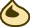

<!DOCTYPE html>
<html lang="en">

<head>
    <meta charset="UTF-8">
    <title>Document</title>
    <link rel="stylesheet" href="https://unpkg.com/leaflet@1.3.1/dist/leaflet.css" integrity="sha512-Rksm5RenBEKSKFjgI3a41vrjkw4EVPlJ3+OiI65vTjIdo9brlAacEuKOiQ5OFh7cOI1bkDwLqdLw3Zg0cRJAAQ==" crossorigin="" />
    <script src="map_locations.js"></script>
    <script src="https://ajax.googleapis.com/ajax/libs/jquery/3.3.1/jquery.min.js"></script>
    <script src="https://unpkg.com/leaflet@1.3.1/dist/leaflet.js" integrity="sha512-/Nsx9X4HebavoBvEBuyp3I7od5tA0UzAxs+j83KgC8PU0kgB4XiK4Lfe4y4cgBtaRJQEIFCW+oC506aPT2L1zw==" crossorigin=""></script>
    <script src="ext/bimap.min.js"></script>
    <script src="a.js"></script>
    <script src="b.js"></script>
    <script src="seeds.js"></script>
    <style>
        #botw-map {
            height: 700px;
            width: 100%;
        }

        .leaflet-container {
            background-color: rgba(255, 0, 0, 0);
        }

        .leaflet-marker-icon {
            border-width: 0px;
            background-color: rgba(0, 0, 0, 0);
        }

        .icon-korok {
            position: relative;
            top: -50%;
            left: -50%;
        }

        .zd-korok {
            border-radius: 50%;
            border: 1px solid #00FFFF;
            background: rgba(0, 255, 255, 0.25)
        }
    </style>
</head>

<body>
    <div id="botw-map" style=""></div>
    <script>
        var ZD_OBJ_Map = new BiMap
        for (var i = 0; i < cheeseToZDMap.length; i++) {
            ZD_OBJ_Map.push(i, cheeseToZDMap[i]);
        }

        function convertCoords(x,
            y) {
            var newX = ((x - 0.3422) * 11647.9425212) - 8163.65502938;
            var newY = ((y - 0.714) * 11645.0168512) - 529.562734724;
            return [newX, newY];
        }

        function distance(x1, x2, y1, y2) {
            var a = x1 - x2;
            var b = y1 - y2;

            return Math.sqrt(a * a + b * b);
        }
        var map = L.map('botw-map', {
            preferCanvas: true,
            minZoom: -4,
            maxZoom: 4,
            center: [0, 0],
            zoom: -4,
            crs: L.CRS.Simple
        });
        var southWest = map.unproject([-6000, 5000], 0);
        var northEast = map.unproject([6000, -5000], 0);
        var bounds = new L.LatLngBounds(southWest, northEast);
        L.imageOverlay('BotW-Map.png', bounds).addTo(map);
        map.setMaxBounds(bounds);

        for (var i = 0; i < OBJECTMAP_KOROK_LOCATIONS.length; i++) {
            var title = "cheese korok " + i + ";lat=" + -(OBJECTMAP_KOROK_LOCATIONS[i][1]) + ",lng=" + OBJECTMAP_KOROK_LOCATIONS[i][0];
            L.marker([-(OBJECTMAP_KOROK_LOCATIONS[i][1]), OBJECTMAP_KOROK_LOCATIONS[i][0]], {
                icon: L.divIcon({
                    html: ""
                })
            }).addTo(map);
        }
        //        var zdArr = [];
        //        console.log(k.length);
        //        for (var i = 1; i < zdArr.length; i++) {
        //            var zd = zdArr[i];
        //            var zdX = -zd[0];
        //            var zdY = zd[1];
        //            var minJ = 0;
        //            var minDist = -1;
        //            for (var j = 0; j < k.length; j++) {
        //                var c = k[j];
        //                var cX = c[1];
        //                var cY = c[0];
        //                var dist = distance(cX, zdX, cY, zdY);
        //                if (minDist === -1 || dist < minDist) {
        //                    minDist = dist;
        //                    minJ = j;
        //                }
        //            }
        //            zdArr[minJ] = i;
        //        }
        //        console.log(zdArr);
    </script>
</body>

</html>
